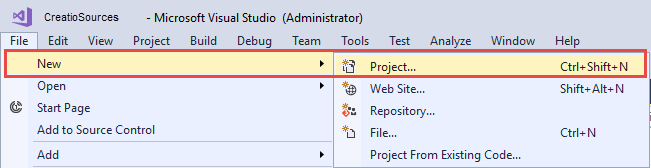
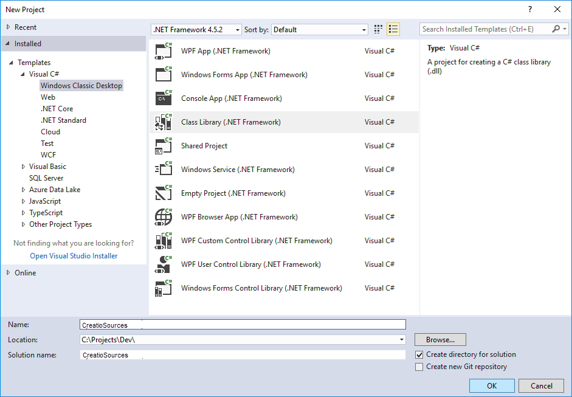
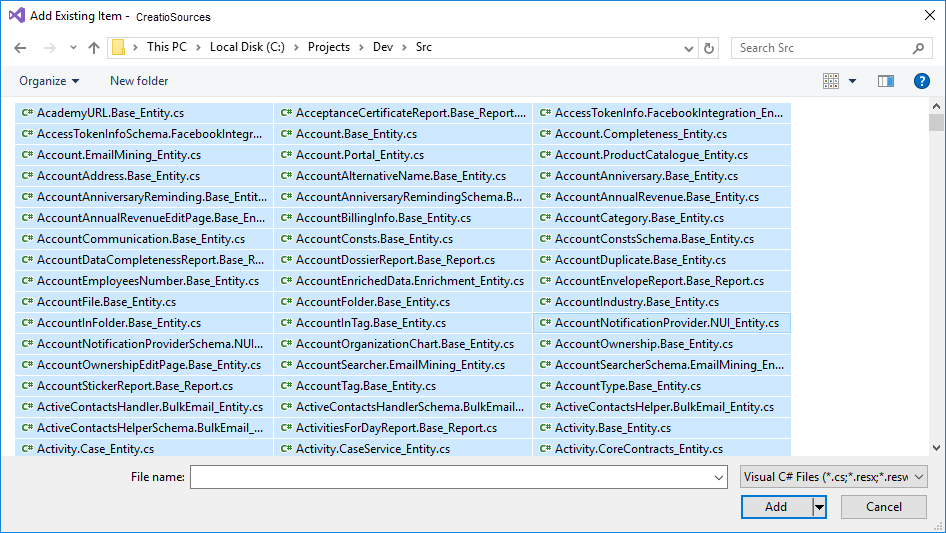
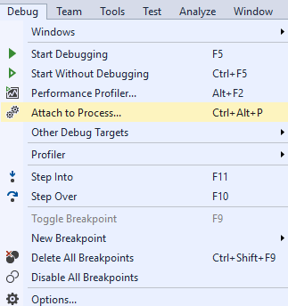

1. Выполнить настройку приложения
Для выполнения отладки необходимо внести изменения в конфигурационные файлы приложения.
Чтобы выполнить настройку приложения:
- Настройте "внешний" Web.config.
В файле Web.config, расположенном в корневом каталоге приложения, для атрибута debug элемента <compilation> установите значение true.
После внесения изменений сохраните файл.
- Настройте "внутренний" Web.config.
В файле Web.config, расположенном в каталоге Terrasoft.WebApp приложения, укажите значения для следующих элементов:
- IncludeDebugInformation — true.
- ExtractAllCompilerSources — true, если необходимо выгружать все схемы при выполнении действия Компилировать (Compile) раздела Конфигурация (Configuration)
- ExtractAllCompilerSources — false, если необходимо выгружать только измененные схемы (значение по умолчанию).
После внесения изменений сохраните файл.
2. Выгрузить исходные коды конфигурации
В разделе Конфигурация (Configuration) приложения выполните действие Компилировать все (Compile all ).
Во время компиляции в папку ../Terrasoft.WebApp/Terrasoft.Configuration/Autogenerated/Src будут выгружены файлы с исходными кодами конфигурационных схем приложения, а также конфигурационные библиотеки, их модули и файлы с отладочной информацией (*.pdb). Исходные коды схем будут выгружены заново при каждой последующей компиляции приложения.
Файлы выгруженных исходных кодов конфигурационных схем именуются в определенном формате: [Название схемы в конфигурации].[Название пакета]_[Тип схемы].cs.
Например: Contact.Base_Entity.cs, ContractReport.Base_Report.cs.
3. Создать проект Visual Studio для отладки
Чтобы создать проект Visual Studio для отладки:
- В Visual Studio выполните команду меню File —> New —> Project.

- В окне свойств создаваемого проекта выберите тип проекта Class Library (.NET Framework), укажите название и расположение проекта.

- После создания проекта удалите из него файл Class1.cs, который был создан по умолчанию, и сохраните проект.
4. Добавить в проект файлы с исходным кодом
- В контекстном меню проекта в проводнике решения выберите команду Add —> Existing Item.
- Перейдите в каталог с выгруженными файлами с исходным кодом и выберите все файлы.

- После добавления файлов сохраните проект.
5. Подключить проект к рабочему процессу IIS
- В меню Visual Studio выберите команду Debug —> Attach to process.

- В списке процессов выберите рабочий процесс IIS, в котором запущен пул приложения Creatio.

По умолчанию рабочий процесс IIS запущен под учетной записью, имя которой совпадает с именем пула приложения. Чтобы отобразить процессы всех пользователей, а не только текущего, необходимо установить признак Show processes from all users.
6. Выполнить отладку
Откройте файл с необходимым исходным кодом и установите точку останова.
Как только будет задействован метод, на котором была установлена точка останова, программа будет остановлена и можно будет проверить текущее состояние переменных и выполнить трассировку кода.